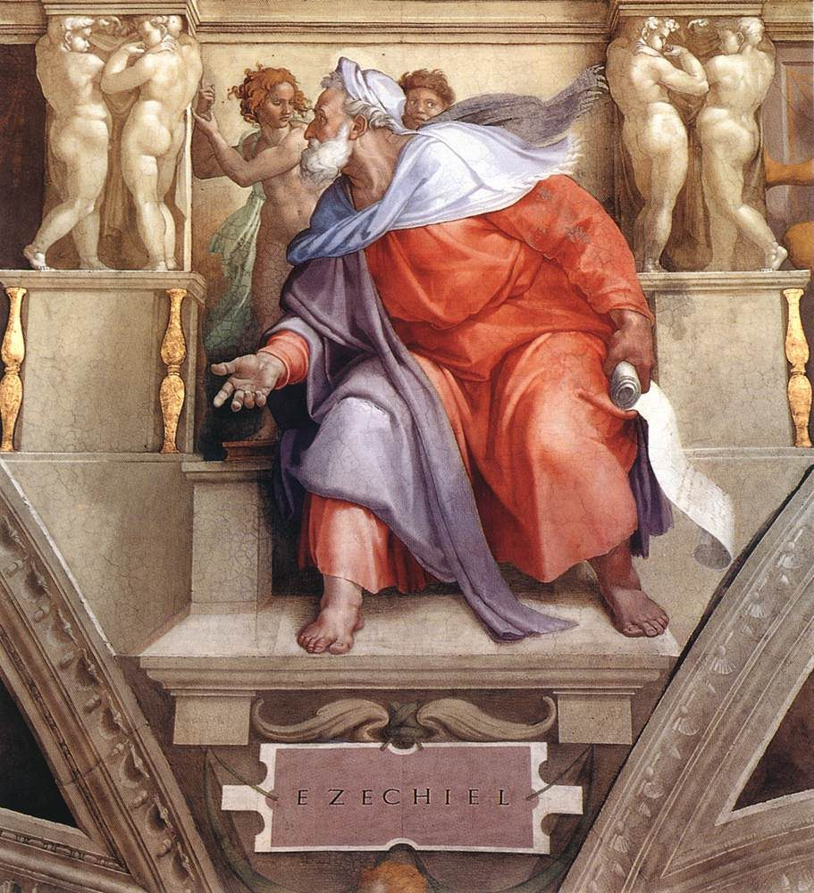

Ezequiel 2 — La Traducción Mister

Ezequiel 2:8–10. El pintor pone un rollo en la propia mano del profeta, cosa que el capítulo no hace: aquí una mano le tiende el rollo, lo extiende delante de él, escrito por ambos lados (2:9–10), y se le manda comerlo. Se usa aquí por el profeta y el rollo.

Notas del traductor
⭐ «Hijo de hombre.» El capítulo se abre con el título que la voz seguirá usando para él, ben adam (ben adam). «Hijo de hombre» está en 107 versículos de la Biblia hebrea, y está en noventa y tres versículos de Ezequiel. Los otros catorce incluyen Números 23:19, el Salmo 8:5 (ya en estas páginas), Job 35:8 y Daniel 8:17, donde un ángel le dice a Daniel las mismas dos palabras que la voz dice aquí. En Ezequiel es el nombre con que se le llama, y estas son las primeras palabras de la voz en que terminaba el capítulo 1: «oí la voz de uno que hablaba» (Ezequiel 1:28, ya en estas páginas). La TLB lo traduce en inglés «son of dust», oyendo a adam en adamah, la tierra.
⭐ En pie. Había caído sobre su rostro (1:28), y la voz no lo levanta; le manda ponerse en pie, y es el espíritu quien lo hace. «Y me puso en pie» está en dos versículos de la Biblia hebrea: aquí y Ezequiel 3:24 (ya en estas páginas). La RV60 tiene «ponte sobre tus pies, y hablaré contigo» y «entró el Espíritu en mí y me afirmó sobre mis pies»; la NVI tiene «ponte en pie, que voy a hablarte» y «el Espíritu entró en mí, hizo que me pusiera de pie»; la TNM 2019 «el espíritu entró en mí y me hizo ponerme de pie». ⚠ La palabra hebrea es rúaj, que es viento, aliento o espíritu (ruach), y el estante se divide en la mayúscula: esta traducción la imprime sin ella.
⭐ «Te envío.» «Te envío» (sholeaj ani otjá) está en este único versículo, y el verbo es el que usan comisiones anteriores: Éxodo 3:10 («te enviaré a Faraón») e Isaías 6:8 («¿a quién enviaré?»), ambos ya en estas páginas. Y luego el pueblo al que se le envía: «naciones rebeldes» (goyim hamordim) está en este único versículo. Goyim es el plural que suele nombrar a las otras naciones, y aquí nombra a Israel. El estante se divide en el número: la RV60 tiene «a gentes rebeldes que se rebelaron contra mí», la NVI «Es una nación rebelde que se ha rebelado contra mí» y la TNM 2019 «a naciones rebeldes que se han rebelado contra mí». Esta traducción mantiene el plural.
⭐ Duros de rostro. «Duros de rostro» (qeshei panim) está en este único versículo. La palabra de la ley para este pueblo era de dura cerviz, que Jehová le dice a Moisés en Éxodo 32:9 (ya en estas páginas); aquí la terquedad ha pasado al rostro y al corazón. La RV60 tiene «hijos de duro rostro y de empedernido corazón», la NVI «un pueblo obstinado y terco» y la TNM 2019 «hijos desafiantes y tercos de corazón».
⭐ Una casa rebelde. «Una casa rebelde» (beit meri) está en siete versículos de la Biblia hebrea, y los siete están en Ezequiel: 2:5 y 2:6, 3:9, 3:26 y 3:27, y 12:2 y 12:3 (meri). El versículo 8 tiene la forma con artículo, «la casa rebelde». En el estante, la RV60 tiene «una casa rebelde» y la NVI «un pueblo rebelde». Lo que el versículo promete es un resultado y no que se escuche: escuchen o se nieguen, «sabrán que hubo un profeta en medio de ellos» está en dos versículos de la Biblia hebrea, aquí y Ezequiel 33:33. La RV60 tiene «siempre conocerán que hubo profeta entre ellos», la NVI «al menos sabrán que han tenido un profeta entre ellos» y la TNM 2019 «sin falta sabrán que hubo un profeta entre ellos».
⭐ «No les tengas miedo.» «No les tengas miedo» está en dos versículos de la Biblia hebrea: Josué 10:8 (ya en estas páginas), donde Jehová se lo dice a Josué antes de una batalla, y aquí. Un paralelo cercano es la comisión de Jeremías, donde Jehová dice que no les tenga miedo (Jeremías 1:8, ya en estas páginas) y que no se amedrente ante ellos, no sea que él lo amedrente delante de ellos (1:17, ya en estas páginas); el mismo verbo del desánimo está en el versículo 6 aquí, dicho de sus rostros. La RV60 tiene «ni temas delante de ellos», la TNM 1987 «ante sus rostros no te sobrecojas de terror» y la TNM 2019 «que sus rostros no te aterroricen».
⚠ Zarzas y espinos, y escorpiones. «Sarabim y sallonim» está en este único versículo, así que nada más en la Biblia muestra lo que significa el par. El estante se divide: la RV60 tiene «aunque te hallas entre zarzas y espinos, y moras con escorpiones», la NVI «por más que estés en medio de cardos y espinas», la TNM 2019 «aunque estés rodeado de abrojos y espinos» y la TNM 1987 «hay gente obstinada y cosas que te punzan». Esta traducción imprime «zarzas y espinos» y dice que es una conjetura. Y «escorpiones» (aqrabbim) está en ocho versículos de la Biblia hebrea: tres donde es el nombre de una subida de montaña, Números 34:4, Josué 15:3 y Jueces 1:36; cuatro donde es la amenaza de Roboam, que donde su padre castigaba con látigos él castigará con escorpiones (1 Reyes 12:11, ya en estas páginas, y 12:14, con 2 Crónicas 10:11 y 10:14); y aquí (aqrab).
⭐ Escuchen o se nieguen. «Escuchen o se nieguen» está en tres versículos de la Biblia hebrea: los versículos 5 y 7 de este capítulo, y Ezequiel 3:11 (ya en estas páginas). Se le manda hablar, lo escuchen o no. La RV60 tiene «porque son muy rebeldes», la NVI «pues son un pueblo rebelde», la TNM 1987 «porque son un caso de rebelión» y la TNM 2019 «porque son un pueblo rebelde». El hebreo es ki meri hemmá, literalmente «porque rebelión son ellos», y esta traducción lo dice así.
⭐ «Abre tu boca y come.» Al profeta se le dice que no sea como aquellos a quienes se le envía: «No seas rebelde como la casa rebelde». «Abre tu boca» (petsé fija) está en este único versículo, y lo que ha de poner en ella viene en los versículos siguientes y en el capítulo 3. La RV60 tiene «abre tu boca, y come lo que yo te doy» y la NVI «Abre tu boca y come lo que te voy a dar». Las palabras comidas están también en la boca de Jeremías (Jeremías 15:16), y el rollo que se toma y se come vuelve en el Nuevo Testamento, donde un ángel le dice a Juan que tome el librito y lo coma, amargo en el estómago y dulce como miel en la boca (Apocalipsis 10:9–10, ya en estas páginas).
⭐ Una mano, y un rollo. El profeta ve una mano enviada hacia él, y en ella «un rollo de libro» (megillah, sefer) está en cuatro versículos de la Biblia hebrea: aquí; el Salmo 40:8 (ya en estas páginas); y Jeremías 36:2 y 36:4, el rollo que Baruc escribe al dictado de Jeremías. La RV60 tiene «un rollo de libro» y la NVI «un rollo escrito».
⚠ Delante y detrás, y lo que está escrito. «Delante y detrás» (panim ve’ajor) está en tres versículos de la Biblia hebrea; los otros dos, 1 Crónicas 19:10 y 2 Crónicas 13:14 (ninguno todavía en estas páginas), son una línea de batalla con el enemigo delante y detrás. Las tablas de Moisés también estaban escritas por ambos lados, con otras palabras (Éxodo 32:15, ya en estas páginas), y en el Nuevo Testamento el rollo en la mano del que está en el trono está escrito por dentro y por detrás (Apocalipsis 5:1, ya en estas páginas). Luego, lo que dice: «endechas, gemido y ayes» está en este único versículo. La RV60 tiene «endechas y lamentaciones y ayes», la NVI «lamentos, quejidos y dolores», la TNM 1987 «endechas y gemir y plañir», la TNM 2019 «canciones de duelo, lamentos y quejidos» y la RV 1909 «endechas, y lamentación, y ayes». El rollo está lleno por ambos lados, y él ha de comerlo antes de hablar (3:1, ya en estas páginas).
Patrones que vale la pena recordar
Dónde esta traducción mantiene las palabras exactas / distintas: «casa rebelde» (beit meri) mantenida como una sola frase en los versículos 5, 6 y 8, para que la fórmula de siete versículos del libro se vea desde su primer uso; «hablar» y «enviar» mantenidos como los dos verbos de la comisión; «escuchen o se nieguen» mantenido idéntico en los versículos 5 y 7; «no tengas miedo» mantenido como una sola cláusula en el versículo 6, tres veces; y «espíritu» (rúaj) impreso sin mayúscula, como en el capítulo 1.
Ecos pagados. La voz en que terminaba el capítulo 1 («oí la voz de uno que hablaba», 1:28) ahora habla; Jeremías 1:8 y 1:17, la comisión de Jeremías; y Éxodo 32:9, el pueblo de dura cerviz al pie del monte.
Ecos plantados. El rollo que se come, en Ezequiel 3:1–3 (ya en estas páginas), donde es dulce como la miel; el espíritu que lo vuelve a poner en pie en 3:24; la casa rebelde que vuelve en 3:9, 3:26–27 y 12:2–3; y el título ben adam, noventa y tres versículos de él, que un ángel usa también para Daniel en Daniel 8:17.
Ezequiel 3, ya en estas páginas: se come el rollo y sabe dulce como la miel, el profeta es puesto como atalaya, se sienta siete días entre los desterrados en Tel-abib, y es encerrado en su casa y queda mudo.